B. Organ Pernapasan Hewan
Tahukah kamu bagaimana burung, serangga, ikan, dan katak bernapas?
Jenis alat pernapasan pada hewan berbeda-beda. Perbedaan itu sangatla dipengaruhi oleh bentuk tubuh dan tempat hewan tersebut hidup. Hewan ada yang bernapas dengan paru-paru, insang, kulit, trakea, ada yang dengan paru-paru dan kulit, serta ada pula yang dengan menggunakan paru-paru dan kantong udara.
|
1. Burung Burung bernapas melalui hidung, masuk ketenggorokan, lalu ke pundi-pundi (kantong) udara,dan akhirnya sampai ke paru-paru. Pundi-pundi udara berfungsi sebagai tempat penyimpan udara yang digunakan untuk bernapas ketika terbang mengepakkan sayap. Pundi-pundi udara tersebut akan terisi kembali ketika burung sedang melayang (tidak mengepakkan sayapnya) atau ketika hinggap di suatu tempat. |
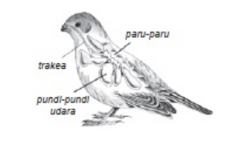 |
|
2. Amfibi Katak dapat hidup di dua alam, yaitu di darat dan di air. Oleh karena itu, katak disebut hewan amfibi. Katak juga merupakan salah satu hewan yang mengalami metamorfosis. Katak bermetamorfosis dari telur, berudu, katak muda, dan akhirnya menjadi katak dewasa. Berudu bernapas dengan insang, kaki depan berudu mulai tumbuh pada umur kurang lebih 9 hari, kemudian insang mulai menyusut dan paru-paru mulai berfungsi serta ekor pun makin pendek. Katak muda pada umur 4 bulan, sudah bernapas dengan paru-paru.Baru setelah 2 tahun, proses metamorfosis katak dianggap selesai. Di dalam paru-paru katak terdapat banyak gelembung udara. Di sinilah terjadi pertukaran gas. Oksigen diserap dan karbon dioksida serta uap air dikeluarkan. Katak juga bernapas dengan kulit. Oleh karena itu, kulit katak selalu kelihatan basah. Melalui kulit yang basah itu, katak menyerap oksigen. |
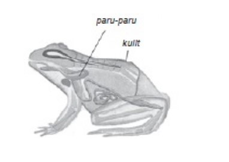 |
|
3. Reptil Reptil termasuk hewan yang bernapas menggunakan paru-paru. Beberapa contoh reptil di antaranya ular, buaya, kadal, cecak, dan biawak. Udara pernapasan masuk melalui hidung kemudian menuju batang tenggorokan, lalu ke paru-paru. Di dalam paru-paru, oksigen diserap, sedangkan karbon dioksida dikeluarkan. Untuk reptil yang sering berkubang di air, contohnya buaya, lubang hidungnya dapat ditutup sewaktu menyelam. Tujuannya agar air tidak masuk ke dalam paru-paru. |
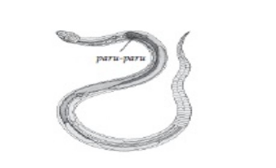 |
|
4. Ikan Ikan bernapas menggunakan insang. Insang ikan terdiri atas 4 pasang, warnanya merah darah, letaknya di belakang rongga mulut pada kedua sisi kepala ikan. Insang terlindungi oleh gelambir yang disebut tutup insang. Tiap insang terdiri atas tulang melengkung yang menopang filamen, yaitu tonjolan daging lembut mirip gigi sisir. Filamen memiliki selaput halus yang disebut lamella dan yang mengandung ribuan pembuluh darah kapiler. Ketika ikan membuka mulut, rongga mulut mengembang untuk mengisap air, lamella menarik oksigen dari air. Selanjutnya, lamella melepaskan karbon dioksida dari darah dan melepaskannya ke dalam air. Ikan menutup mulut, tutup insang membuka sehingga air terpompa melewati insang dan keluar melalui rongga insang. Ikan memiliki gelembung renang. Gelembung renang itu berguna untuk menyimpan oksigen dan mengatur gerak naik-turun. Untuk ikan yang hidupnya di lumpur, seperti belut, lele, gabus, dan gurami mempunyai lipatanlipatan insang yang disebut labirin. Labirin juga berfungsi menyimpan cadangan oksigen. |
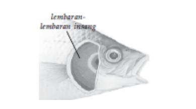 |
|
5. Serangga Serangga bernapas dengan trakea. Trakea merupakan pembuluh-pembuluh halus bercabang yang memenuhi seluruh bagian tubuhserangga. Udara keluar masuk melalui lubanglubang di kedua sisi tubuhnya. Lubang-lubang pernapasan tersebut dinamakan spirakel. Pada setiap ruas tubuh terdapat sepasang spirakel, yaitu sebuah di sebelah kiri dan sebelah lagi di sebelah kanan. Spirakel selalu terbuka dan merupakan muara pembuluh-pembuluh trakea. Gerakan otot tubuh yang teratur pada serangga menyebabkan keluar masuknya udara pada tubuh. Contoh serangga di antaranya nyamuk, lalat, rayap, belalang, dan kupu-kupu. |
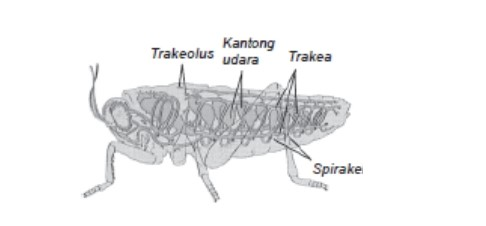 |
6. Cacing Tanah
Cacing tanah tidak memiliki alat pernapasan khusus. Cacing tanah mengambil oksigen dan mengeluarkan karbon dioksida melalui permukaan tubuh secara difusi. Untuk menjamin penyerapan udara oleh darah, maka permukaan pernapasan harus selalu lembab. Kulit yang basah mempermudah masuknya oksigen dan keluarnya karbon dioksida.
7. Mamalia
Mamalia adalah hewan yang menyusui anaknya. Hewan mamalia ada yang hidup di darat dan ada pula yang hidup di air. Baik mamalia darat maupun air bernapas dengan paru-paru. Dapatkah kamu menyebutkan contoh hewan mamalia? Bagaimana cara mamalia bernapas?
Hewan mamalia yang hidup di darat seperti sapi, kerbau, kambing, musang, monyet, dan lain-lain, jalannya pernapasan dimulai dari hidung, tenggorokan, paru-paru.
Bagaimana dengan mamalia air seperti paus dan lumba-lumba? paus dapat bertahan lama menyelam dalam air, karena paus dapat menyimpan oksigen. Paus akan menutup lubang hidungnya ketika menyelam, sehingga air tidak dapat masuk ke dalam alat pernapasannya. Ketika kelebihan uap air jenuh paus tersebut akan muncul ke permukaan air untuk menyemburkan uap air jenuh tersebut dan mengambil oksigen dari udara.
Kerjakanlah secara berkelompok!
TujuanSiswa dapat mengetahui jenis-jenis penapasan hewan.
Alat dan BahanCharta berbagai macam hewan.
Cara Kerja- Amatilah charta hewan di dalam tabel pengamatan.
- Diskusikanlah dengan temanmu.
- Isilah tabel pengamatan sesuai dengan hasil diskusimu.
Tabel Pengamatan Hewan dan Alat Pernapasannya
| No | Gambar | Alat Pernapasan |
|---|---|---|
| 1 | 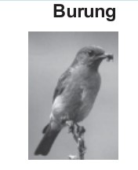 | |
| 2 | 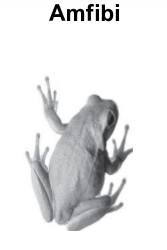 | |
| 3 | 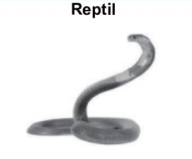 | |
| 4 | 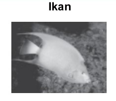 | |
| 5 | 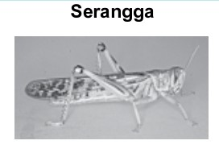 | |
| 6 | 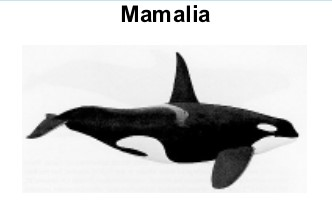 |
Hewan mempunyai alat pernapasan yang berbeda-beda. Macam-macam alat pernapasan hewan adalah paru-paru, insang, kulit, dan trakea.